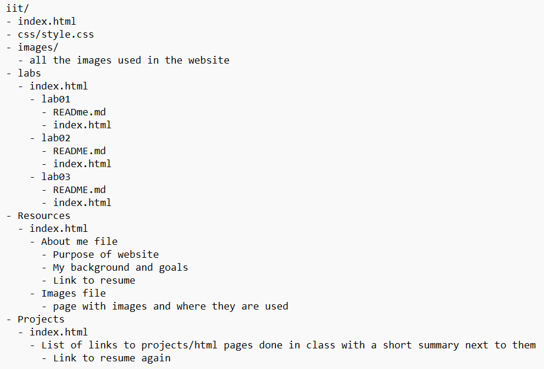

Website IA

In this lab, I created a personal Intro to ITWS website and deployed it to my Azure server. I set up the proper folder structure in GitHub, developed multiple interconnected pages (home, labs/projects, and lab landing pages), and organized all resources into subfolders for clean architecture. The lab emphasized semantic HTML, consistent design across pages, and proper version control with GitHub Desktop. This project gave me a structured personal site where I can showcase my labs and projects as the course progresses.
